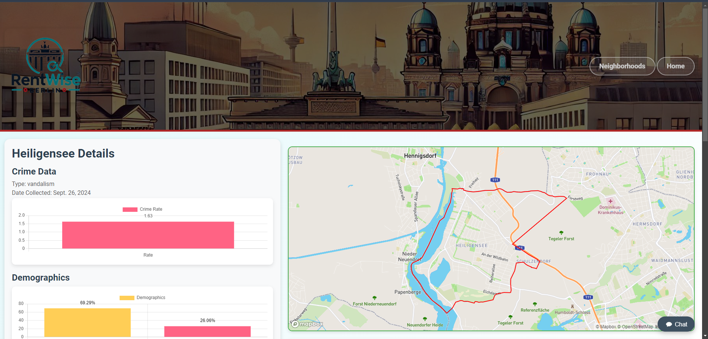
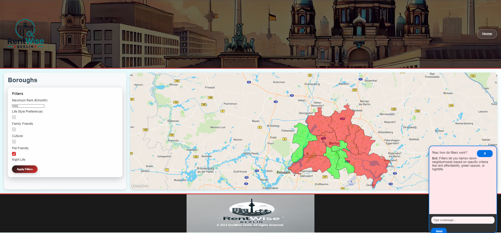

December 2025
Berlin RentWise
A production-oriented Django application for exploring Berlin neighbourhoods.



What it does
Berlin RentWise helps users explore 447 neighbourhoods across 12 boroughs using rent, crime, amenities and lifestyle information. It includes filtering, maps, neighbourhood detail pages and API endpoints.
Engineering
The project uses Django and PostgreSQL, includes 44 unit/integration tests, Swagger/OpenAPI documentation and automated GitHub Actions workflows for CI and deployment.